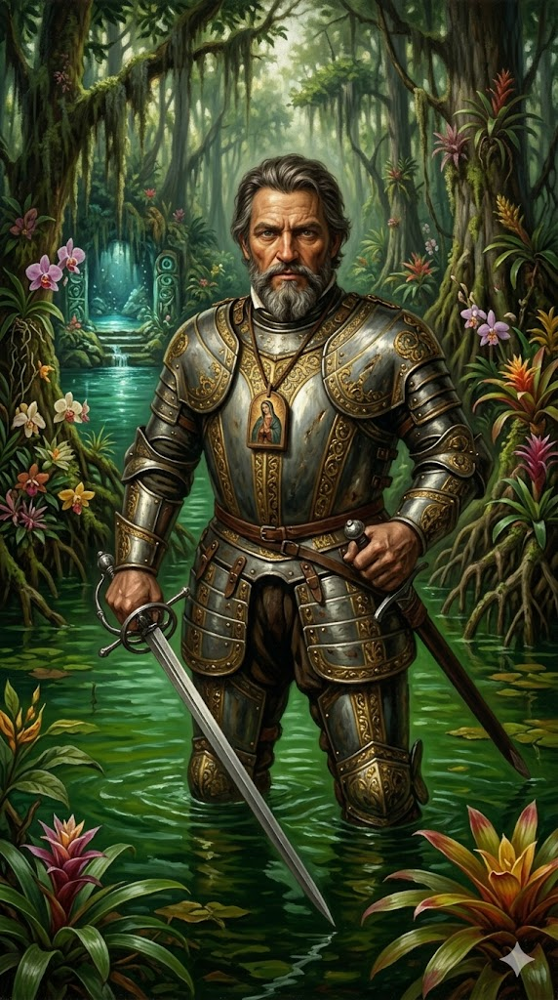

חואן פונסה דה ליאון

לחץ על התמונה להגדלה
מקור ומשמעות השם המלא (אטימולוגיה)
שם פרטי: חואן (Juan)
"חואן" הוא הגרסה הספרדית לשם העברי "יוחנן" (Yohanan), דרך הלטינית "Iohannes".
פירוש מילולי: השם מורכב מהצירוף "יהוה חנן", כלומר "האל חנן" או "האל גמל חסד". זהו אחד השמות הנפוצים ביותר בעולם הנוצרי (מקביל לג'ון, ז'אן, ג'ובאני או איוואן), בהשפעת יוחנן המטביל ויוחנן השליח מהברית החדשה.
שם משפחה ראשון: פונסה (Ponce)
השם "פונסה" מקורו בשם הלטיני Pontius (פונטיוס).
פירוש היסטורי: השם הלטיני קשור ככל הנראה למילה "Pontus" (ים) או "Pons" (גשר). משפחתו השתייכה לשושלת אצולה עתיקה וענפה בספרד (משפחת פונסה דה מינרווה), שהתגאתה בשורשיה הרומיים העתיקים.
שם משפחה שני (טופונימי): דה ליאון (de León)
שם טופונימי המעיד על שיוך גיאוגרפי ואריסטוקרטי.
פירוש: הקידומת "דה" משמעותה "מ-". "ליאון" (León) משמעותו בספרדית אריה. השם מתייחס היסטורית לממלכת ליאון – אחת הממלכות הנוצריות החשובות והחזקות ביותר בצפון-מערב חצי האי האיברי בימי הביניים, שסמלה היה אריה זקוף (Rampant lion). נשיאת השם העידה על מעמד אצולה ושייכות לאליטה הישנה של ספרד, עוד לפני האיחוד עם ממלכת קסטיליה.
ילדות, אצולה צבאית ושדות הקרב של גרנדה
חואן פונסה דה ליאון נולד בסביבות שנת 1474 בעיירה סַנְטֶרְבָאס דֶה קַמְפּוֹס (Santervás de Campos), בלב ממלכת קסטיליה וליאון שבספרד. הוא נולד למשפחת אצולה ידועה, אך היה בן למשפחה מרובת ילדים, מה שאמר שכבן צעיר לא ציפתה לו ירושה קרקעית גדולה, והוא נאלץ לחצוב את דרכו בכוח החרב.
בילדותו הוא נשלח לשמש כנושא כלים (Page) ומשרת אישי בחצרו של אחד האבירים החזקים בספרד, פדרו נונייז דה גוזמן. שם קיבל פונסה דה ליאון חינוך צבאי קפדני: הוא למד לרכוב על סוסים, לסייף, לירות ברובה-קשת ולנהל טקטיקות צבאיות.
הניסיון הקרבי האמיתי הראשון שלו היה כנער, כאשר השתתף לצידו של פטרונו בכיבוש גרנדה (1492) – נפילתה של הממלכה המוסלמית האחרונה בספרד. המלחמה הזו חישלה אותו ועיצבה את אופיו כלוחם נוקשה, אכזר ושאפתן, המוכן לסכן הכל למען הכתר והדת.
אידאולוגיה, מניעים והמיתוס של מעיין הנעורים
פונסה דה ליאון הוא מקרה קלאסי שבו המיתוס ההיסטורי בלע לחלוטין את המניעים הפוליטיים והכלכליים האמיתיים של האיש.
פונסה, אציל גאה, לוחם פגוע ומושפל, סירב בתוקף להפוך לפקוד זוטר של דייגו קולומבוס. כדי לחזור לגדולה ולהבטיח לעצמו שטח שיהיה כפוף ישירות למלך ספרד (ולא למשפחת קולומבוס), הוא היה מוכן לסכן את כל הונו וחייו במסע הרפתקני מסוכן אל הלא-נודע. הוא פנה ישירות למלך וביקש רישיון לגלות אדמות חדשות, רק כדי להוכיח את עצמאותו ועליונותו.
האגדה הודבקה לו רק שנים לאחר מותו על ידי היסטוריונים בספרד (כמו גונסאלו פרננדס דה אוביידו), ככל הנראה כדי ללעוג לו ולהציג אותו כזקן טיפש ופתי שהאמין באגדות אינדיאניות, במסגרת מלחמות הכפשה בחצר המלוכה.
נסיבות היסטוריות: איך ידע לאן להפליג?
בתחילת המאה ה-16, האזור הקריבי כבר היה מיושב בספרדים שחיסלו כמעט לחלוטין את אוכלוסיית הילידים בהיספניולה (האיטי) ובפוארטו ריקו עקב מחלות ועבודת כפייה. המלך פרדיננד שמח לעודד יזמות פרטית, והעניק לפונסה דה ליאון פטנט (חוזה מלכותי) בשנת 1512 להתיישב באי "בימיני".
1. עדויות ילידים: במהלך שנותיו כמושל פוארטו ריקו, פונסה חקר את הילידים (בני הטאינו) שסיפרו לו בעקביות על מסת אדמה עצומה או אי גדול בשם "בימיני" הנמצא צפונית-מערבית לאיי הבהאמה.
2. ספינות ציידי עבדים: עקב המחסור הנואש בכוח אדם במטעים, ספינות פיראטיות וציידי עבדים ספרדיים החלו לשוט צפונה לאיי הבהאמה כדי לחטוף ילידים. המבצעים הללו היו לרוב מחוץ לחוק ולרדאר הרשמי, אך הספנים הללו ככל הנראה כבר הגיעו למים של פלורידה והביאו איתם בחזרה שרטוטים גסים ושמועות על היבשת שמעבר. פונסה פשוט חיבר את המודיעין האינדיאני עם תצפיות העבדים, שכר את הנווטים הטובים ביותר, והפליג בדיוק לכיוון הנכון.
המסע של 1513: גילוי פלורידה וזרם הגולף
ב-4 במרץ 1513 יצא פונסה דה ליאון מפוארטו ריקו עם שלוש ספינות במימונו האישי. הם שטו צפונה-מערבה דרך איי הבהאמה.
המסע האחרון והמוות הטרגי (1521)
לאחר ביקור בספרד (שבו אושר לו רשמית התואר מושל פלורידה ואביר), ולאחר ששמע על הצלחותיו העצומות של הרנאן קורטס במקסיקו, פונסה דה ליאון קינא והחליט לחזור כדי ליישב את פלורידה (שאותה הבין כעת כיבשת ולא כאי).
זמן קצר לאחר הנחיתה, הספרדים הותקפו באכזריות. במהלך קרב עקוב מדם, פונסה דה ליאון נפגע בירכו מחץ מורעל במיץ מעץ מנצ'יניל (Manchineel) רעיל במיוחד. הפצע הזדהם במהירות, והמשלחת כולה נמלטה בבהלה בחזרה לקובה. שם, בעיר הוואנה, מת חואן פונסה דה ליאון מפצעיו ביולי 1521, והוא בן 47 בלבד. חלומו על יישוב פלורידה נגדע.
מורשתו היא התחלת התביעה הספרדית על ארצות הברית של היום, ומיפוי זרם הגולף – מפתח גיאופוליטי שאיפשר לספרד להעביר אלפי טונות של כסף וזהב בחזרה לאירופה במאות הבאות.
מקורות וביבליוגרפיה (אימות מחקר)
- היסטוריה הכללית של האינדים (Gonzalo Fernández de Oviedo): גונסאלו פרננדס דה אוביידו היה ההיסטוריון הספרדי הראשון שטבע (והפיץ) את הסיפור לפיו פונסה דה ליאון חיפש את "מעיין הנעורים", ככל הנראה כאמצעי להכפשת שמו ולהצגתו כפתטי ואגואיסטי לאחר מותו.
- "דקאדות" של אנטוניו דה אררה אי טורדסייאס (Antonio de Herrera y Tordesillas): ההיסטוריוגרף הראשי של מלך ספרד, שכתב (בתחילת המאה ה-17) את התיעוד המפורט ביותר על מסלול הניווט של פונסה דה ליאון ב-1513 ואת גילוי זרם הגולף, בהתבסס על יומני אוניות אבודים.
- מחקר היסטורי מודרני מפריך מיתוסים: Fuson, Robert H. (2000). Juan Ponce de León and the Spanish Discovery of Puerto Rico and Florida. (מחקר שמוכיח בצורה חד-משמעית כי מניעיו של פונסה היו פוליטיים וקרקעיים, ושולל את מיתוס המעיין מכל וכל).